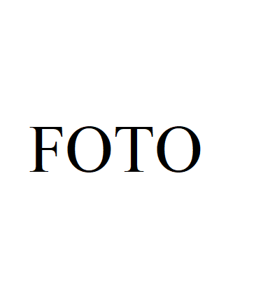

k_mezapuke@yahoo.com
Sazināties ar mani
Kristīna Mežapuķe | Vides speciāliste/Frontend developer
+371 26544789k_mezapuke@yahoo.com
Sazināties ar mani
Darba pieredze
AS "VentEko", vides inženiere
2021.aprīlis -- Iesniegumu atļauju piesārņojošo darbību saņemšanai sagatavošana
- Ietekmes uz vidi novērtējuma projektu izstrāde
- Dabas resursu nodokļa aprēķināšana
- u.c.
SIA "Geo Consultants", vides aizsardzības speciāliste
2016.jūlijs - 2021.aprīlis- Iesniegumu atļauju piesārņojošo darbību saņemšanai sagatavošana
- Ietekmes uz vidi novērtējuma projektu izstrāde
- Dabas resursu nodokļa aprēķināšana
- u.c.
SIA "Eco Cycle", vides inženiere
2015.maijs - 2016.augusts- Projektu izstrāde
- Tehnoloģiskie risinājumi dažādām tehnoloģijām
- u.c.
SIA „Vides, bioenerģētikas un biotehnoloģijas kompetences centrs", pētnieks
2014.oktobris - 2015.marts- Piedalīšanās projektā „Nolietoto riepu depolimerizācijas pētījumi mikroviļņu iedarbībā”
SIA "Eiksyn", direktors
2011.oktobris - 2016.augusts- Projektu izstrāde
- Iesniegumu atļauju piesārņojošo darbību saņemšanai sagatavošana
- Pirolīzes process
- u.c.
SIA "Eko Terra", izpilddirektors
2008.novembris - 2014.februāris- Kompostēšanas tehnoloģijas
- Vides jautājumu risināšana
- u.c.
SIA "EKO OSTA", projektu menedžeris
2010.oktobris - 2011.augusts- Projektu sagatavošana un vadība
- Vides jautājumu risināšana
- Iesniegumu atļauju piesārņojošo darbību saņemšanai sagatavošana
- u.c.
Latvijas atkritumu saimniecības asociācija, tulks
2008.marts - 2009.aprīlis- Tulkojumi atkritumu saimniecības projektā
- INTERREG projekts
Latvijas atkritumu saimniecības asociācija, Tehniskais asistents
2003.oktobris - 2005.decembris- Dažādi vides projekti atkritumu saimniecības jomā (t.sk.kompostēšanas)
Izglītība
Latvijas Lauksaimniecības universitāte, Lauku inženieru fakultāte, Doktora studijas (temats – bioloģiski sadalāmo atkritumu kompostēšanas paņēmieni Latvijā) 2005.-2010.
Rīgas Tehniskā universitāte, Enerģētikas un elektrotehnikas fakultāte, Maģistra grāds (vides zinātnes programma) 2003.-2005.
Rīgas Tehniskā universitāte, Enerģētikas un elektrotehnikas fakultāte, Vides inženiera bakalaura grāds 2000.-2003.
Kursi
Latvijas Universitātes Vadības un uzņēmējdarbības mācību centrs: Front-end mājas lapas izstrādē 2022.gada aprīlis - jūnijs
Profesionālās izglītības kompetences centrs Rīgas Valsts tehnikums: Rasēšanas AutoCAD programmā 2018.gada janvāris - marts
Iemaņas
B kategorijas braukšanas tiesības
Frontend izstrādē lietoju sekojošas valodas:- HTML5
- CSS3
Valodu prasme
- Krievu (dzimtā)
- Latviešu (brīvi)
- Angļu (profesionāli)